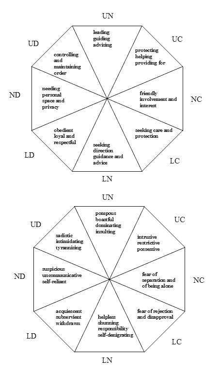
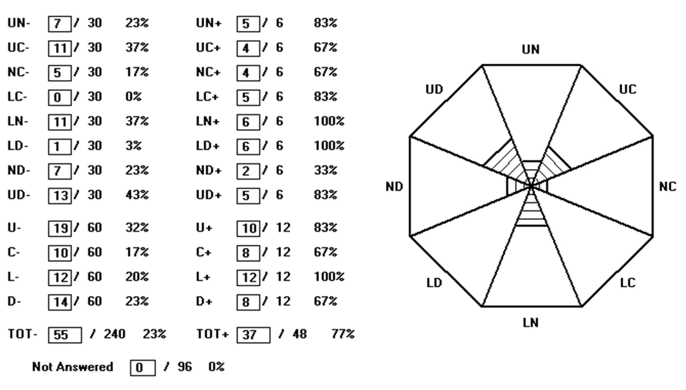
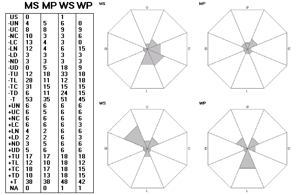
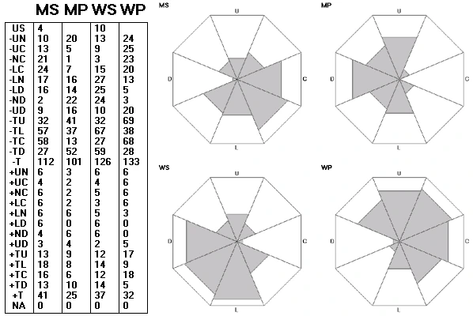

Η Θεωρία των τύπων του Σχετίζεσθαι
Η Θεωρία των τύπων του Σχετίζεσθαι
Το σχετίζεσθαι (relating) είναι αυτό που κάνει ένα άτομο προς ένα άλλο ή προς άλλους· επομένως αποτελεί χαρακτηριστικό του ίδιου του ατόμου. Μπορεί να αφορά τόσο κάτι που συμβαίνει σε μια συγκεκριμένη στιγμή όσο και κάτι που εκτείνεται σε ολόκληρη τη διάρκεια της ζωής. Για παράδειγμα, το να προσφέρεις σε κάποιον μια θέση στο λεωφορείο είναι μια μορφή σχετίζεσθαι, όπως ακριβώς είναι και το να περνά κανείς τη ζωή του νιώθοντας την ανάγκη να βοηθά τους άλλους. Ένα άτομο μπορεί να σχετίζεται τόσο με εσωτερικευμένες αναπαραστάσεις ανθρώπων (στο μυαλό του) όσο και με ανθρώπους στον πραγματικό κόσμο. Ο Birtchnell σημείωσε στο βιβλίο του (1993/96a) ότι το σχετίζεσθαι αποτελεί τόσο ουσιαστικό μέρος της ύπαρξής μας, ώστε δεν σταματά ποτέ — όπως ακριβώς και η καρδιά δεν παύει να χτυπά.
Η θεωρία των τύπων του σχετίζεσθαι, η οποία παλαιότερα ονομαζόταν χωρική θεωρία (spatial theory), άρχισε να διαμορφώνεται στα τέλη της δεκαετίας του 1980. Προέκυψε μέσα από προβληματισμούς σχετικά με τη φύση της ψυχολογικής εξάρτησης. Η σύνδεσή της με την ψυχολογική εξάρτηση ήταν εμφανής σε μια πρώιμη εκδοχή της (Birtchnell, 1987). Αναπτύχθηκε κατά την περίοδο που ο Birtchnell είχε συχνή επαφή με τον John Bowlby, ενώ μια ακόμη καθοριστική επιρροή ήταν η προσπάθειά του να χαράξει μια σαφή διαχωριστική γραμμή ανάμεσα στη δική του θεωρία και τη θεωρία του δεσμού (attachment theory) (βλ. Birtchnell, 1997a). Ο Bowlby πέθανε το 1990. Ήδη από το 1991, ο Καθηγητής Russell Gardner είχε γράψει: «Το χωρικό σχήμα του Δρ. Birtchnell έχει σημαντικές προοπτικές για την ανάλυση δεδομένων στις διαπροσωπικές σχέσεις». Ήταν ο Maurice Lorr (προσωπική επικοινωνία, 1987) που πρώτος επισήμανε την ομοιότητά της με τη διαπροσωπική θεωρία (interpersonal theory), μια θεωρία που και ο ίδιος είχε συμβάλει να αναπτυχθεί (Lorr & McNair, 1963). Σε δύο εργασίες του (Birtchnell, 1990 και Birtchnell, 1994) περιέγραψε τις διαφορές ανάμεσα στη δική του θεωρία και τη διαπροσωπική θεωρία. Η χωρική θεωρία, όπως ονομαζόταν τότε, παρουσιάστηκε ολοκληρωμένα για πρώτη φορά στο βιβλίο του, How Humans Relate: A New Interpersonal Theory, το οποίο εκδόθηκε αρχικά με σκληρό εξώφυλλο (Birtchnell, 1993) και αργότερα με μαλακό (Birtchnell, 1996a).
ΠΕΡΙΕΧΟΜΕΝΑ ΒΙΒΛΙΟΥ:
- "Σχετίζεσθαι": Γενικές αρχές
- Οι δύο άξονες του σχετίζεσθαι
- Περαιτέρω ανάπτυξη των δύο αξόνων
- Διαδικασίες ωρίμανσης στους δύο άξονες
- Εγγύτητα (Closeness)
- Απόσταση (Distance)
- Θέση ισχύος (Upperness)
- Θέση αδυναμίας (Lowerness)
- Το διαπροσωπικό οκτάγωνο
- Ο διαπροσωπικός κύκλος
- Συμπέρασμα
Για τη θεωρία αυτή, ο Καθηγητής A.T. Beck (Φιλαδέλφεια) έγραψε (στο ενημερωτικό δελτίο ASCAP, 1994): «Είμαι πεπεισμένος ότι ο John Birtchnell έχει ανακαλύψει κάτι σημαντικό όσον αφορά στον κάθετο και οριζόντιο άξονά του.» Ο Καθηγητής Paul Gilbert έγραψε: «Του αξίζουν συγχαρητήρια που συγκέντρωσε μια τόσο ποικιλόμορφη βιβλιογραφία και έριξε νέο φως στην πολυπλοκότητα των ανθρώπινων σχέσεων.» (Και τα δύο παραθέματα βρίσκονται στο εξώφυλλο της έκδοσης με μαλακό εξώφυλλο). Ο Καθηγητής Russell Gardner (Τέξας) έγραψε, στον Πρόλογο του βιβλίου: «Μέχρι τώρα δεν είχαμε κανένα ολοκληρωμένο σύστημα για την οργάνωση και τη συστηματοποίηση των επικοινωνιακών χαρακτηριστικών των ανθρώπων.» Ο Denis Trent (1994) σε μια κριτική του βιβλίου, έγραψε: «Η θεωρία του Birtchnell είναι περιεκτική και καλά μελετημένη. Κρυμμένη μέσα στο περιεχόμενο, ωστόσο, βρίσκεται η ικανότητά του να παρουσιάζει μια εξαιρετικά περίπλοκη και καλά ενσωματωμένη θεωρία με ένα σαφές και εύκολα κατανοητό ύφος.» Η Carolyn Reichelt (1994) έγραψε: «Όταν το χωρικό μοντέλο του John Birtchnell για το σχετίζεσθαι εμφανίστηκε για πρώτη φορά στο ενημερωτικό δελτίο ASCAP, ήμουν κάπως επιφυλακτική. Έχω μία προκατάληψη απέναντι στην τάση να στριμώχνουμε την πολυπλοκότητα του ανθρώπινου πνεύματος σε μικρά κουτάκια. Ωστόσο, περαιτέρω δοκίμια μου κέντρισαν το ενδιαφέρον, και όταν μου ζητήθηκε να κάνω κριτική στο βιβλίο, συμφώνησα. Χαίρομαι που το έκανα· θα είχα χάσει ένα απολαυστικό και συναρπαστικό ανάγνωσμα. Συνιστώ αυτό το βιβλίο σε όποιον ενδιαφέρεται για τα ανθρώπινα συναισθήματα και τις αλληλεπιδράσεις — όχι μόνο σε επαγγελματίες, αλλά σε κάθε έξυπνο αναγνώστη.»
Τα βασικά στοιχεία της θεωρίας των τύπων του σχετίζεσθαι
- Το "σχετίζεσθαι" λαμβάνει χώρα κατά μήκος δύο τεμνόμενων αξόνων: ενός οριζόντιου, που αφορά στην ανάγκη για εμπλοκή με τους άλλους (εγγύτητα) έναντι της ανάγκης για διαχωρισμό (απόσταση), και ενός κάθετου, που αφορά την ανάγκη για σχετίζεσθαι από πάνω προς τα κάτω (θέση ισχύος) έναντι της ανάγκης για σχετίζεσθαι από κάτω προς τα πάνω (θέση αδυναμίας).
- Η θεωρία προτείνει τέσσερις βασικές καταστάσεις σχέσης (states of relatedness): Εγγύτητα (Closeness), Απόσταση (Distance), Θέση ισχύος (Upperness) και Θέση αδυναμίας (Lowerness).
- Τα συναισθήματα λειτουργούν ως δείκτες που μας πληροφορούν αν κινούμαστε προς την επίτευξη και διατήρηση των επιθυμητών καταστάσεων σχέσης.
- Αν και γεννιόμαστε με έμφυτες προδιαθέσεις για τις τέσσερις βασικές καταστάσεις, κατά την ωρίμανσή μας, χρειάζεται να αναπτύξουμε επάρκεια στην επίτευξη και διατήρηση καθεμίας από αυτές.
- Ένα άτομο που έχει επάρκεια σε όλες τις καταστάσεις σχέσης, ονομάζεται ευέλικτο (versatile).
- Οι επαρκείς τύποι σχετίζεσθαι ονομάζονται θετικοί, ενώ οι τύποι σχετίζεσθαι που υπολείπονται σε επάρκεια ονομάζονται αρνητικοί. Ένας από τους στόχους της ψυχοθεραπείας είναι η εξάλειψη των αρνητικών τύπων σχετίζεσθαι.
- Υπάρχουν τέσσερις ενδιάμεσες καταστάσεις που προκύπτουν από τον συνδυασμό του οριζόντιου και κάθετου άξονα. Αυτές ονομάζονται Eγγύτητα από θέση ισχύος (Upper Close - UC), Εγγύτητα από θέση αδυναμίας (Lower Close - LC), Απόσταση από θέση ισχύος (Upper Distant - UD), και Απόσταση από θέση αδυναμίας (Lower Distant - LD). Οι τέσσερις βασικές καταστάσεις (που ονομάζονται ουδέτερες) και οι τέσσερις ενδιάμεσες καταστάσεις οργανώνονται σε μια θεωρητική δομή που ονομάζεται διαπροσωπικό οκτάγωνο (interpersonal octagon).
Πως σχετίζονται οι άλλοι μαζί σου (Being related to)
Όπως ακριβώς σχετιζόμαστε με τους άλλους ανθρώπους συνεχώς, έτσι και εμείς αποτελούμε αντικείμενο συσχέτισης (από άλλους) συνεχώς. Δεν γνωρίζουμε πάντα ότι κάποιος/α σχετίζεται μαζί μας. Μια διασημότητα αγνοεί όλα τα συναισθήματα που τρέφουν κάθε κάποιοι άνθρωποι γι' αυτήν. Ό,τι ισχύει για το «σχετίζεσθαι» ισχύει επίσης και για το «να αποτελεί κανείς αντικείμενο συσχέτισης». Μπορεί να αφορά εξίσου ό,τι συμβαίνει σε μια στιγμή, όσο και ό,τι συμβαίνει κατά τη διάρκεια μιας ολόκληρης ζωής. Μπορεί να αφορά εξίσου εσωτερικευμένους ανθρώπους όσο και ανθρώπους στον πραγματικό κόσμο. Οι άνθρωποι μπορούν να επηρεαστούν βαθιά από τον τρόπο που ορισμένοι άλλοι σχετίζονται μαζί τους. Το «σχετίζεσθαι» και το «να αποτελεί κανείς αντικείμενο συσχέτισης» (να σχετίζονται οι άλλοι μαζί σου) συνδυάζονται στη διαδικασία των τύπων αλληλοσχετίζεσθαι (interrelating), και το CREOQ (βλ. παρακάτω), το οποίο αξιολογεί τους τύπους αλληλοσχετίζεσθαι (την αλληλεπίδραση μεταξύ δύο ανθρώπων), διαθέτει ξεχωριστές κλίμακες αξιολόγησης για το καθένα.
Κατηγορίες αρνητικών τύπων σχετίζεσθαι
Οι κατηγορίες αρνητικών τύπων σχετίζεσθαι αποτελούν μορφές ανεπάρκειας/ανικανότητας στη λειτουργία του σχετίζεσθαι. Επειδή οι άνθρωποι χρειάζονται να σχετίζονται για να επιτύχουν επιθυμητές καταστάσεις σχέσης, ακόμη κι αν δεν μπορούν να σχετίζονται επαρκώς για να τις επιτύχουν, θα σχετίζονται ανεπαρκώς προκειμένου να το κάνουν. Οι τρεις βασικοί αρνητικοί τύποι σχετίζεσθαι ονομάζονται αποφευκτικοί, ανασφαλείς και απεγνωσμένοι. Στον αποφευκτικό τύπο σχετίζεσθαι, το άτομο φοβάται τόσο πολύ μια συγκεκριμένη κατάσταση σχέσης, ώστε προσκολλάται απεγνωσμένα στον αντίθετο τύπο. Έτσι, ένα άτομο που φοβάται την εγγύτητα προσκολλάται στην απόσταση (αποστασιοποιείται). Ο ανασφαλής τύπος σχετίζεσθαι σημαίνει ότι το άτομο προσπαθεί να επιτύχει ή να διατηρήσει μια συγκεκριμένη κατάσταση σχετίζεσθαι, αλλά φοβάται διαρκώς ότι θα τη χάσει. Έτσι, ένα άτομο που σχετίζεται ανασφαλώς από θέση ισχύος προσπαθεί συνεχώς να υποβιβάζει τους άλλους ώστε να μην εκτοπιστεί από τη θέση ισχύος. Ο απεγνωσμένος τύπος σχετίζεσθαι αφορά το άτομο που θα κάνει οτιδήποτε για να αποκτήσει ή να διατηρήσει ένα συγκεκριμένο τύπο σχετίζεσθαι, ανεξάρτητα από το τι επιπτώσεις έχει αυτό στο άλλο άτομο. Έτσι, ένα άτομο που σχετίζεται απεγνωσμένα με εγγύτητα θα επιβάλλει την εγγύτητά του στον άλλον, ακόμη κι αν αυτή δεν είναι επιθυμητή από το άλλο άτομο. Ένα άτομο που σχετίζεται απεγνωσμένα από θέση αδυναμίας θα παρακαλέσει, θα ικετεύσει και θα προσποιηθεί αδυναμία, προκειμένου να κάνει τους άλλους να σχετιστούν προς αυτό από θέση ισχύος. Οι αξιολογήσεις των τύπων του σχετίζεσθαι (βλ. ενότητα Αξιολογήσεις των τύπων του Σχετίζεσθαι και του Αλληλοσχετίζεσθαι) είναι ερωτηματολόγια αξιολόγησης κυρίως των αρνητικών τύπων.

Σχήμα 1. Θετικοί (άνω Σχήμα) και αρνητικοί (κάτω Σχήμα) τύποι του σχετίζεσθαι. Τα ζεύγη αρχικών γραμμάτων αποτελούν συντομογραφίες των πλήρων ονομασιών των οκταγώνων που παρουσιάζονται στο κείμενο. Τα Σχήματα δημοσιεύτηκαν για πρώτη φορά στο Birtchnell, J. The interpersonal octagon: An alternative to the interpersonal circle. Human Relations, 47, σ. 518 και 524. Copyright The Tavistock Institute, 1994. Reproduced by permission.
Η διαφορά ανάμεσα στο σχετίζεσθαι και στο αλληλοσχετίζεσθαι
Ενώ το "σχετίζεσθαι" αποτελεί χαρακτηριστικό ενός ατόμου, το "αλληλοσχετίζεσθαι" αποτελεί χαρακτηριστικό ενός ζεύγους ανθρώπων (ή μερικές φορές ενός αριθμού ανθρώπων). Όταν δύο άνθρωποι βρίσκονται σε διαδικασία αλληλοσυσχέτισης, ο καθένας ταυτόχρονα σχετίζεται με τον άλλον και αποτελεί αντικείμενο σχετίζεσθαι από τον άλλον. Η αλληλοσχέτιση μπορεί να είναι σύντομη (όπως όταν κάποιος κάνει μια αγορά σε ένα κατάστημα) ή μπορεί να εκτείνεται σε μεγαλύτερο χρονικό διάστημα (όπως σε μια μακροχρόνια σχέση). Το CREOQ και το FMIQ (βλ. παρακάτω) αποτελούν αξιολογήσεις του αλληλοσχετίζεσθαι.
Η θεωρία ως βάση για την αξιολόγηση του σχετίζεσθαι και του αλληλοσχετίζεσθαι
Η θεωρία των τύπων του σχετίζεσθαι αναπτύχθηκε κυρίως ως βάση για τον σχεδιασμό εργαλείων για την αξιολόγηση των τύπων του σχετίζεσθαι· όμως, από τη στιγμή που εδραιώθηκε, έγινε επίσης ένα χρήσιμο μέσο για την κατανόηση της συμπεριφοράς συσχέτισης ενός ατόμου, όπως για παράδειγμα στην ψυχοθεραπεία.
Οι γενικές τάσεις σχετίζεσθαι ενός ατόμου μπορούν να αξιολογηθούν μέσω του Ερωτηματολογίου των τύπων Σχετίζεσθαι του Ατόμου προς Άλλους (Person's Relating to Others Questionnaire - PROQ) ή διάφορων παραγώγων του. Αντικειμενικά, μπορούν να αξιολογηθούν με τη λίστα ελέγχου που ονομάζεται Παρατήρηση Συμπεριφοράς των τύπων Σχετίζεσθαι (Observation of Relating Behaviour - ORB).
Όλες οι αξιολογήδεις των τύπων του αλληλοσχετίζεσθαι βασίζονται σε ένα σύνολο τεσσάρων ερωτηματολογίων, μέσω των οποίων κάθε ένα από τα δύο άτομα αξιολογεί πώς σχετίζεται με τον άλλον και πώς ο άλλος σχετίζεται με αυτό. Το κύριο εργαλείο αξιολόγησης των τύπων του αλληλοσχετίζεσθαι σχεδιάστηκε για χρήση με ζευγάρια και ονομάζεται Ερωτηματολόγιο των τύπων Αλληλοσχετίζεσθαι των Ζευγαριών μεταξύ τους (Couple's Relating to Each Other Questionnaire - CREOQ). Στην συνέχεια δημιουργήθηκαν αντίστοιχα εργαλεία για την αξιολόγηση των τύπων του αλληλοσχετίζεσθαι μεταξύ των μελών μίας οικογένειας και ονομάστηκαν Ερωτηματολόγιο των τύπων του Αλληλοσχετίζεσθαι των Μελών μίας Οικογένειας (Family Members’ Interrelating Questionnaire – FMIQ).
Η θεωρία και οι διαταραχές προσωπικότητας
Η θεωρία των τύπων του σχετίζεσθαι είναι χρήσιμη στην ταξινόμηση των διαταραχών προσωπικότητας (Birtchnell, 1996b, 1997b· Birtchnell & Shine, 2000) και επίσης στη θεραπεία τους (Birtchnell & Bourgherini, 2000).)
Η θεωρία στην ψυχοθεραπεία, στη θεραπεία ζεύγους και στη θεραπεία οικογένειας.
Η θεωρία των τύπων του σχετίζεσθαι έχει ιδιαίτερη εφαρμογή στη διάγνωση των δυσκολιών σχετίζεσθαι όπως αυτές εμφανίζονται στην ψυχοθεραπεία, στη θεραπεία ζεύγους και στη θεραπεία οικογένειας, καθώς και στην ανάπτυξη στρατηγικών για την αντιμετώπισή τους.
Βιβλιογραφία
Beck, A.T. (1994) Letters The ASCAP Newsletter, Volume 7 No 2, 4-5
Birtchnell, J. (1987) Attachment detachment, directiveness receptiveness: A system for classifying interpersonal attitudes and behaviour. British Journal of Medical Psychology, 60, 17 27.
Birtchnell, J. (1990) Interpersonal theory: Criticism, modification and elaboration. Human Relations, 43, 1183-1201.
Birtchnell, J. (1993) How Humans Relate: A New Interpersonal Theory. A volume in the series Human Evolution, Behavior & Intelligence. Praeger: Westport, CT. Paperback version published by Psychology Press, Hove, UK, 1996a.
Birtchnell, J. (1994) The interpersonal octagon: An alternative to the interpersonal circle. Human Relations, 47, 511-529.
Birtchnell, J. (1996b) Detachment. In Costello, C.G. (Ed.) Personality Characteristics of the Personality Disordered. Wiley: New York.
Birtchnell, J. (1997a) Attachment in an interpersonal context. British Journal of Medical Psychology, 70, 265-279.
Birtchnell, J. (1997b) Personality set within an octagonal model of relating. In Plutchik, R. & Conte, H.R. (Eds.) Circumplex Models of Personality and Emotions. American Psychological Association Press: Washington, D.C.
Birtchnell, J. (2001) Relating therapy with individuals, couples and families. Journal of Family Therapy, 23, 63-84.
Birtchnell, J. & Bourgherini, G. (1999) Interpersonal theory and treatment of dependent personality disorder. Maffei, C. (Ed.) Treatment of Personality Disorders. Plenum Press: New York.
Birtchnell, J . & Shine, J. (2000) Personality disorders and the interpersonal octagon. British Journal of Medical psychology, 73, 433-448.
Gardner, R. (1991) Birtchnell-Gardner Exchange: X-Y plotting used in the spatial model. Across-Species Contrast Comparisons and Psychopathology Newsletter, 4, (12) 3-9.
Lorr, M. & McNair, D.M. (1963) An interpersonal behavior circle. Journal of Abnormal and Social Psychology, 67, 68-75.
Reichelt, C. (1994) Book review in Across-Species Contrast Comparisons and Psychopathology (ASCAP) Newsletter, 7, (4) 8-10.
Trent, D. (1994) Special Review in British Journal of Medical Psychology, 67, 207-08.
Τύποι σχετίζεσθαι στην Ψυχοθεραπεία (Relating in Psychotherapy)
Αυτός είναι ο τίτλος του βιβλίου που εκδόθηκε για πρώτη φορά από τον εκδοτικό οίκο Praeger με σκληρό εξώφυλλο το 1999 και επανεκδόθηκε από τη Brunner–Routledge με μαλακό εξώφυλλο τον Μάιο του 2002. Ο σκοπός του βιβλίου είναι να δείξει πως εφαρμόσζεται η θεωρία του σχετίζεσθαι (βλ. ενότητα για τη Θεωρία του Σχετίζεσθαι) κατά τη διάρκεια της ψυχοθεραπείας. Κεφάλαια που περιγράφουν τη θεωρία του σχετίζεσθαι εναλλάσσονται με κεφάλαια που περιγράφουν πώς η θεωρία μπορεί να εφαρμοστεί στο πως σχετίζονται διαφορετικοί τύποι ψυχοθεραπευτών, καθώς και διαφορετικοί τύποι θεραπευόμενων. Το Κεφάλαιο 9 περιγράφει τα ερωτηματολόγια για τη αξιολόγηση των τύπων του σχετίζεσθαι και του αλληλοσχετίζεσθαι (βλ. ενότητα Αξιολόγηση των τύπων του Σχετίζεσθαι και του Αλληλοσχετίζεσθαι) και εξηγεί πώς αυτά μπορούν να χρησιμοποιηθούν στην αρχική αξιολόγηση του θεραπευόμενου ή του ζευγαριού που αναζητά θεραπεία ζεύγους, καθώς και για την αξιολόγηση της βελτίωσης σε διάφορα στάδια της θεραπείας και στο τέλος της.
Πρέπει να τονιστεί ότι, είτε ο/η θεραπευτής/τρια και ο/η θεραπευόμενος/η το αντιλαμβάνονται είτε όχι, και ανεξάρτητα από τη μορφή θεραπείας που εφαρμόζεται, οι τύποι του σχετίζεσθαι (διαπροσωπικές σχέσεις) αποτελεί ένα μεγάλο μέρος όσων συζητούνται στη θεραπεία, και τα ελλείμματα στους τύπους του σχετίζεσθαι διορθώνονται κατά τη θεραπευτική διαδικασία.
Προς το τέλος του βιβλίου εισάγεται ο όρος «θεραπεία των τύπων του σχετίζεσθαι» (relating therapy), για να περιγράψει μια μορφή ψυχοθεραπείας στην οποία ο/η θεραπευτής/τρια και ο/η θεραπευόμενος/η (ή το ζευγάρι) εργάζονται συνεργατικά για να διορθώσουν συγκεκριμένες ανεπάρκειες στους τύπους του σχετίζεσθαι. Στη θεραπεία των τύπων του σχετίζεσθαι, περισσότερο από ό,τι σε άλλες μορφές θεραπείας, δίνεται έμφαση στον ρόλο που παίζει το πως σχετίζονται οι άλλοι απέναντι στον/στην θεραπευόμενο/η, και αναδεικνύεται η κυκλική φύση του αλληλοσχετίζεσθαι ("σχετίζεσθαι" και "να σχετίζονται μαζί σου"). Ο/η θεραπευόμενος/η υποστηρίζεται ώστε να επινοήσει στρατηγικές για την αντιμετώπιση των αρνητικών τύπων του σχετίζεσθαι σημαντικών άλλων απέναντί του/της, ή μπορεί ακόμη και να δεχτεί συμβουλευτική για το πως να περιορίσει την εμπλοκή του με αυτά τα σημαντικά άλλα άτομα.
Αναπόσπαστο συστατικό της θεραπείας των τύπων του σχετίζεσθαι είναι η χρήση ενός εργαλείου μέτρησης (βλ. ενότητα για την Αξιολόγηση των τύπων του Σχετίζεσθαι και του Αλληλοσχετίζεσθαι) για τον εντοπισμό ανεπαρκειών και τη συνεχή παρακολούθηση των αλλαγών.
ΠΕΡΙΕΧΟΜΕΝΑ ΒΙΒΛΙΟΥ:
- Τύποι σχετίζεσθαι και η συνάφεια με την ψυχοθεραπεία
- Ο εσωτερικός εγκέφαλος και ο εξωτερικός εγκέφαλος
- Ο άξονας της εγγύτητας (proximity) στο σχετίζεσθαι
- Ο άξονας της εγγύτητας στην ψυχοθεραπεία
- Ο άξονας της ισχύος (power) στο σχετίζεσθαι
- Ο άξονας της ισχύος στην ψυχοθεραπεία
- Τύποι αλληλοσχετίζεσθαι (Interrelating)
- Τύποι αλληλοσχετίζεσθαι στην ψυχοθεραπεία
- Αξιολόγηση των τύπων του σχετίζεσθαι και του αλληλοσχετίζεσθαι στην ψυχοθεραπεία
- Η ανάδυση μιας νέας προσέγγισης στην ψυχοθεραπεία
Το βιβλίο έτυχε θερμής υποδοχής:
Ο Δρ. Derry Macdiarmid, Senior Fellow στην Ψυχοθεραπεία, Ιατρική Σχολή του Guy's Hospital, Λονδίνο, έγραψε: «Αυτό είναι ένα πολύ πλούσιο βιβλίο...μια θαυμάσια σύνοψη ενός πολύ μεγάλου φάσματος προσεγγίσεων...ένα σημαντικό βήμα προς την ενσωμάτωση των ψυχοθεραπειών...μια πραγματική απόλαυση να το διαβάζει κανείς, ειδικά λόγω του πλούτου της ανθρώπινης παρατήρησης που ενσωματώνει».
Η Tirril Harris (2000), Senior Research Fellow, Socio-Medical Research Centre, Guy’s, Kings and St Thomas’ School of Medicine, Λονδίνο, έγραψε: «Αυτό που ανταμείβει σε αυτό το βιβλίο είναι η δομική σαφήνεια και η απλότητα της οπτικής του - κάτι πολύ πιο εύκολο να χρησιμοποιηθεί με θεραπευόμενους/ες σε σύγκριση με τη συνήθη ψυχοδυναμική ορολογία...παρά την προφανή προέλευσή του στο ακαδημαϊκό πεδίο της ψυχολογικής θεωρίας και της ψυχομετρικής αξιολόγησης, το βιβλίο εκτιμάται ακόμη περισσότερο ως ένα εγχειρίδιο για την ίδια την τέχνη της ψυχοθεραπείας».
Η Δρ. Jill Savege Scharff (2000), Διεθνές Ινστιτούτο Θεραπείας Αντικειμενοτρόπων Σχέσεων στην Ουάσιγκτον, έγραψε: «Για ατομικούς, ομαδικούς, οικογενειακούς θεραπευτές/τριες και θεραπευτές/τριες ζεύγους, το "Relating in Psychotherapy" προσφέρει μια εξαιρετική θεωρία για τις ανθρώπινες σχέσεις και εργαλεία αξιολόγησης των δυσκολιών σε αυτούς τους τομείς, και προτείνει μια ψυχοθεραπευτική προσέγγιση εφαρμόσιμη σε πολλές μορφές θεραπείας, το αποτέλεσμα της οποίας είναι μετρήσιμο. Πάνω απ' όλα, αυτό το βιβλίο ενδυναμώνει τους κλινικούς να διεξάγουν τη δική τους έρευνα για την κλινική έκβαση, γεγονός που μπορεί να αποκαταστήσει την εμπιστοσύνη στη μεθοδολογία τους, σε μια εποχή που η αποτελεσματικότητα της ψυχοθεραπείας αμφισβητείται από μια κοινωνία που συχνά προτιμά τη φαρμακευτική αγωγή».
Ο Δρ. Anthony Bateman (2000), Γραμματέας της Σχολής Ψυχοθεραπείας του Royal College of Psychiatrists, έγραψε: «Το βιβλίο διαβάζεται εύκολα, είναι καλά δομημένο και αναδεικνύει την εκτεταμένη γνώση του συγγραφέα για διάφορες ψυχοθεραπείες... Ο συγγραφέας αξίζει συγχαρητήρια για το επίπονο έργο της ανάπτυξης μιας θεωρίας, την εφαρμογή της στην πράξη και της παραγωγής ουσιαστικών αξιολογήσεων. Πρόκειται για μια εντυπωσιακή προσπάθεια δημιουργίας μιας ψυχοθεραπείας βασισμένης σε τεκμήρια (evidence-based)».
Ο Δρ. Dale Mathers (2001), International Association for Analytical Psychology, έγραψε: «Σας συνιστώ αυτό το βιβλίο. Η θεωρία διαπερνά όλες τις μορφές (σχολές) θεραπείας και προσφέρει έναν τρόπο περιγραφής κάθε σχολής με όρους του σχετίζεσθαι, τόσο από την πλευρά του/της θεραπευόμενου/ης όσο και του/της θεραπευτή/τριας... Ελπίζω ότι θα διαβαστεί ευρέως».
Βιβλιογραφία
Bateman, A.W. (2000) Book Review, British Journal of Psychiatry, 176, 499-503.
Birtchnell, J. (1999) Relating in Psychotherapy: The Application of a New Theory. Westport, Con.: Praeger. Came out as a paperback (Brunner-Routledge) in May, 2002.
Harris, T. (2000) Book Review, British Journal of Medical Psychology, 73, 567-568.
Mathers, D. (2001) Book Review. British Journal of Psychotherapy, 18, 134-137.
Savege Scharff, J. (2000) Book Review, American Journal of Psychotherapy, 54, 118-120.
Η Θεωρία των Τύπων του Σχετίζεσθαι -Κλινικές και Δικαστικές Εφαρμογές
Το βιβλίο αυτό δημοσιεύτηκε στα Αγγλικά με τον τίτλο «Relating Theory – Clinical and Forensic Applications» και στη συνέχεια μεταφράστηκε στα Ελληνικά. Συγκεντρώνει τις πρόσφατες ερευνητικές εξελίξεις στη θεωρία των τύπων του σχετίζεσθαι. Διαιρείται σε τέσσερα μέρη, τα οποία εισάγουν τον αναγνώστη στη θεωρία, στην ανάπτυξή της και στις εφαρμογές της στην κλινική και δικαστική ψυχολογία. Τα θέματα που εξετάζονται περιλαμβάνουν τον τρόπο με τον οποίο τα ζευγάρια σχετίζονται μεταξύ τους, πώς οι νέοι σχετίζονται με τους γονείς τους, πώς οι αξιολογήσεις του σχετίζεσθαι μπορούν να χρησιμοποιηθούν θεραπευτικά, πώς συγκεκριμένα αρνητικά στυλ σχετίζεσθαι συνδέονται με παραβατική συμπεριφορά, ριψοκίνδυνη δράση και χρήση αλκοόλ, ψυχοπαθητικές και σαδιστικές τάσεις, και πώς το σχετίζεσθαι των δραστών μπορεί να τροποποιηθεί κατά τη διάρκεια θεραπευτικών παρεμβάσεων στη φυλακή. Το βιβλίο παρουσιάζει διεθνή έρευνα, με χρήση τόσο ποσοτικών όσο και ποιοτικών μεθόδων, και απευθύνεται σε κλινικούς, ακαδημαϊκούς, καθώς και σε προπτυχιακούς και μεταπτυχιακούς φοιτητές και φοιτήτριες στους τομείς της ψυχολογίας, κλινικής ψυχολογίας, δικαστικής/εγκληματολογικής ψυχολογίας, ψυχιατρικής, ψυχοθεραπείας, συμβουλευτικής, θεραπείας μέσω τέχνης και ψυχικής υγείας.
Βιβλιογραφία
Birtchnell, J., Newberry, M., & Kalairzaki, A. (Eds) (2016). Relating Theory: Clinical and Forensic Applications. London: Palgrave Macmillan.
Birtchnell, J., Newberry, M., & Καλαϊτζάκη (Eds) (2021). Η Θεωρία των Τύπων του Σχετίζεσθαι - Κλινικές και Δικαστικές Εφαρμογές. Εκδόσεις Γ. ΔΑΡΔΑΝΟΣ - Κ. ΔΑΡΔΑΝΟΣ κ ΣΙΑ ΕΕ
Αξιολογήσεις του σχετίζεσθαι και του αλληλοσχετίζεσθαι
Σε αυτή την ενότητα παρουσιάζονται οι αξιολογήσεις (ερωτηματολόγια) που βασίζονται στη θεωρία των τύπων του σχετίζεσθαι (βλ. ενότητα για τη Θεωρία των τύπων του Σχετίζεσθαι). Αυτά τα ερωτηματολόγια αξιολογήσεις έχουν εξελιχθεί από προηγούμενα (βλ. Birtchnell, 1988, Birtchnell, Falkowski & Steffert, 1992), βασίζονται στη θεωρία του σχετίζεσθαι και περιέχουν οκτώ κλίμακες αντίστοιχες προς τα οκτημόρια του διαπροσωπικού οκτάγωνου (βλ. ενότητα Θεωρία του Σχετίζεσθαι).
Το Ερωτηματολόγιο των τύπων του Σχετίζεσθαι με τους Άλλους (PROQ)
Το PROQ (σε αντίθεση με το PROQ2) ήταν το πρώτο εργαλείο αξιολόγησης του σχετίζεσθαι και περιγράφηκε στο άρθρο Birtchnell, Falkowski & Steffert (1992). Αργότερα, περιγράφηκε στο Κεφάλαιο 9 τόσο του How Humans Relate (Birtchnell, 1993/6) όσο και του Relating in Psychotherapy (Birtchnell, 1999/2002). Είναι ένα αυτοσυμπληρούμενο ερωτηματολόγιο (αυτοαναφοράς) αποτελούμενο από 96 ερωτήσεις (items), με δώδεκα ερωτήσεις να συμβάλλουν σε καθεμία από τις οκτώ κλίμακες που αντιστοιχούν σε κάθε τμήμα του διαπροσωπικού οκτάγωνου (βλ. ενότητα Θεωρία του Σχετίζεσθαι). Από τις δώδεκα ερωτήσεις, δύο αφορούν τους θετικούς τύπους του σχετίζεσθαι, οι οποίες συνήθως δεν βαθμολογούνται, και δέκα αφορούν τους αρνητικούς τύπους του σχετίζεσθαι. Οι ερωτήσεις για τους θετικούς τύπους (θετικές ερωτήσεις) συμπεριλαμβάνονται προκειμένου να δοθεί η ευκαιρία στους/στις συμμετέχοντες/ουσες να πουν κάτι καλό για τον εαυτό τους. Υπάρχουν τέσσερις επιλογές απάντησης για κάθε ερώτηση, που βαθμολογούνται από 0 έως 3. Συνεπώς, για κάθε κλίμακα, το εύρος βαθμολογίας είναι 0-30, και η συνολική βαθμολογία, που συνδυάζει τις βαθμολογίες όλων των κλιμάκων, έχει μέγιστη βαθμολογία το 240.
Το PROQ2
Το 1995 δημιουργήθηκε μια αναθεωρημένη έκδοση του PROQ, η οποία ονομάστηκε PROQ2. Στόχος της ήταν να βελτιώσει τη σαφήνεια και την παραγοντική δομή και να μειώσει τη συσχέτιση (correlation) μεταξύ των κλιμάκων. Η διατύπωση των επιλογών απάντησης άλλαξε σε "Σχεδόν πάντα αλήθεια", "Αρκετά συχνά αλήθεια", "Μερικές φορές αλήθεια" και "Σπάνια αλήθεια". Από την εισαγωγή του PROQ2 και μετά, το αρχικό PROQ έχει πάψει να χρησιμοποιείται. Το άρθρο των Birtchnell, Falkowski & Steffert (1992) είναι το μοναδικό που αφορά το αρχικό PROQ. Το πρώτο άρθρο για το PROQ2 είναι αυτό των Birtchnell & Shine (2000).
Οι κλίμακες του PROQ και του PROQ2, που έχουν ονομαστεί από τα τμήματα του διαπροσωπικού οκτάγωνου, ονομάζονται: ουδέτερη θέση ισχύος (Upper neutral - UN), εγγύτητα από θέση ισχύος (Upper close - UC), ουδέτερη εγγύτητα (Neutral Close - NC), εγγύτητα από θέση αδυναμίας (Lower Close - LC), ουδέτερη θέση αδυναμίας (Lower Neutral - LN), απόσταση από θέση αδυναμίας (Lower Distant - LD), ουδέτερη απόσταση (Neutral Distant - ND) και απόσταση από θέση ισχύς (Upper Distant - UD).
Τόσο το PROQ όσο και το PROQ2 βαθμολογούνται μέσω υπολογιστή. Η εκτύπωση των αποτελεσμάτων περιλαμβάνει τόσο μια λίστα με τις βαθμολογίες ανά κλίμακα όσο και μια γραφική αναπαράσταση των βαθμολογιών με τη μορφή σκιασμένων περιοχών στα τμήματα του Οκταγωώνου (βλ. Birtchnell, 1997, 1999 και 2001). Το λογισμικό για τη βαθμολόγηση είναι διαθέσιμο κατόπιν αιτήματος.

Μια έκδοση του PROQ2 για εφήβους
Μια ελαφρώς τροποποιημένη έκδοση του PROQ2 χρησιμοποιήθηκε σε μια μελέτη οικοτρόφων και μη οικοτρόφων μαθητών σε ένα αγγλικό δημόσιο σχολείο (Βλ. ενότητα Ερευνητικές Εφαρμογές).
Ελληνική μετάφραση του PROQ2
Μια ελληνική μετάφραση του PROQ2, με την ονομασία PROQ2-GR, χορηγήθηκε σε δείγμα ελληνικού πληθυσμού 457 ατόμων. Τα ψυχομετρικά ευρήματα συγκρίθηκαν με εκείνα του αγγλικού δείγματος των Birtchnell & Evans (2003). Οι Έλληνες είχαν υψηλότερες μέσες βαθμολογίες σε πέντε από τις οκτώ κλίμακες. Η ελληνική έκδοση του PROQ2 έδειξε μεγαλύτερο βαθμό διπολικότητας σε σχέση με την αγγλική έκδοση (Kalaitzaki & Nestoros, 2003).
Τα PROQ2a και PROQ3
Αυτά τα δύο ερωτηματολόγια αποτελούν προσπάθειες δημιουργίας μιας συντομευμένης έκδοσης του PROQ2. Και οι δύο έχουν το μισό μέγεθος του PROQ2, δηλαδή αποτελούνται από 48 ερωτήσεις, έξι για κάθε κλίμακα. Πέντε από αυτές τις έξι ερωτήσεις αφορούν το αρνητικό σχετίζεσθαι και μία το θετικό. Το PROQ2a αποτελείται εξ ολοκλήρου από ερωτήσεις του PROQ2, ενώ το PROQ3 περιλαμβάνει ορισμένες νέες. Οι ερωτήσεις του PROQ2a περιλαμβάνουν αυτές με τις υψηλότερες φορτίσεις (loadings) στους οκτώ παράγοντες που προέκυψαν από την ανάλυση κύριων συνιστωσών του PROQ2 και με τις χαμηλότερες communalities. Στο PROQ3, όλες οι ερωτήσεις της κλίμακας UC, καθώς και κάποιες της κλίμακας LD, έχουν αντικατασταθεί. Ο σκοπός αυτής της αλλαγής είναι να καταστεί η κλίμακα UC πιο παθολογική και να μειωθεί η υψηλή συσχέτιση (correlation) μεταξύ της κλίμακας LD και της κλίμακας LN.
Το Ερωτηματολόγιο PROQ3Η Συνέντευξη των τύπων του Σχετίζεσθαι του Ατόμου (PRI)
Πρόκειται για μια δομημένη συνέντευξη, η οποία αξιολογεί τις ίδιες οκτώ κλίμακες της θεωρίας και, όπως τα άλλα εργαλεία (π.χ PROQ3), αποτελεί αξιολόγηση των γενικών τάσεων συσχέτισης (τύποι του σχετίζεσθαι) του ατόμου. Αναπτύχθηκε σε συνεργασία με τη Δρ. Roberta Leoni, επισκέπτρια ερευνήτρια από το Πανεπιστήμιο της Πάδοβας στην Ιταλία. Σε αντίθεση με τα ερωτηματολόγια, οι ερωτήσεις της συνέντευξης παρουσιάζονται ανά κλίμακα, και ο/η συνεντευκτής/τρια εξηγεί το γενικό θέμα που θα καλυφθεί πριν από κάθε σύνολο ερωτήσεων. Οι κλίμακες παρουσιάζονται με την εξής σειρά: ουδέτερη εγγύτητα, ουδέτερη απόσταση, οι τρεις κλίμακες της θέσης ισχύος και τέλος τρεις κλίμακες της θέσης αδυναμίας. Αυτή η αλληλουχία βγάζει περισσότερο νόημα για τον/την συνεντευξιαζόμενο/η από το να γίνεται περιήγηση στις οκτώ θέσεις του οκταγώνου. Επιτρέπει στον/στη συνεντευκτή/τρια να εξετάσει πρώτα τις τάσεις του ατόμου να έρχεται κοντά ή να απομακρύνεται από τους άλλους, στη συνέχεια να εξετάσει την τάση του να αναλαμβάνει θέσεις ισχύος και, τέλος, θέσεις αδυναμίας. Κάθε ερώτηση λαμβάνει βαθμολογία 0-2, ανάλογα με τον βαθμό βεβαιότητας με τον οποίο απαντά ο/η συνεντευξιαζόμενος/η.
Μια συνέντευξη έχει το πλεονέκτημα, σε σχέση με ένα ερωτηματολόγιο, ότι επιτρέπει στον/στην συνεντευκτή/τρια να βεβαιωθεί πως ο/η συνεντευξιαζόμενος/η κατανοεί πλήρως τι σημαίνει καθεμία από τις ερωτήσεις, ενώ παράλληλα μπορεί να πειστεί και ότι το άτομο πράγματι διαθέτει το χαρακτηριστικό για το οποίο ερωτάται. Αν και οι ερωτήσεις είναι αυστηρά προκαθορισμένες, τόσο ο/η συνεντευκτής/τρια όσο και ο/η συνεντευξιαζόμενος/η μπορούν να κάνουν διευκρινιστικές ερωτήσεις ή ακόμη και να ζητήσουν παραδείγματα. Για κάθε κλίμακα, οι ερωτήσεις ομαδοποιούνται σε πέντε σύνολα των πέντε· συνεπώς υπάρχουν είκοσι πέντε ερωτήσεις ανά κλίμακα και ο συνολικός αριθμός του είναι 200 ερωτήσεις. Μπορεί αυτός ο αριθμός να φαίνεται τρομακτικός, αλλά με έναν συνεργάσιμο συμμετέχοντα, η συνέντευξη μπορεί να ολοκληρωθεί μέσα σε 45 λεπτά.
Κάθε ένα από τα πέντε σύνολα ερωτήσεων εξετάζει ένα διαφορετικό τύπο του σχετίζεσθαι. Οι τύποι του σχετίζεσθαι είναι: ΑΣΦΑΛΗΣ (SECURE), ΑΚΡΑΙΑ (EXTREME), ΑΠΕΓΝΩΣΜΕΝΗ (DESPERATE), ΑΝΑΣΦΑΛΗΣ (INSECURE) και ΑΠΟΦΕΥΚΤΙΚΗ (AVOIDANT) – δημιουργώντας το ακρωνύμιο SEDIA (που στα ιταλικά σημαίνει «καρέκλα»). Οι πέντε ΑΣΦΑΛΕΙΣ ερωτήσεις αποτελούν μια πιο αποφασιστική προσπάθεια (σε σχέση με το PROQ2) να μετρηθούν οι θετικοί τύποι του σχετίζεσθαι. Μέσω αυτών, ο/η συνεντευκτής/τρια επιχειρεί να διαπιστώσει αν το άτομο έχει επάρκεια στο να σχετίζεται στην κάθε κλίμακα. Αυτό μπορεί να γίνει πολύ πιο αποτελεσματικά σε συνθήκες συνέντευξης παρά μέσω ενός ερωτηματολογίου.
Οι πέντε ΑΚΡΑΙΕΣ ερωτήσεις αποτελούν μια παρέκκλιση από τις καθιερωμένες κατηγορίες των τύπων του σχετίζεσθαι. Κατά μία έννοια, αποτελούν μια παραχώρηση στη λογική που διέπει τον διαπροσωπικό κύκλο των διαπροσωπικών ψυχολόγων (Leary, 1957; Kiesler, 1996) και στην έννοια του «προτιμώμενου» στυλ ή τύπου του σχετίζεσθαι. Ένα άτομο που σχετίζεται ακραία παρουσιάζει μια έντονη τάση να σχετίζεται με έναν συγκεκριμένο τρόπο, είτε θετικά είτε αρνητικά. Αυτή η κατηγορία συμπεριλήφθηκε επειδή φαίνεται ότι, μερικές φορές, άνθρωποι που συγκεντρώνουν υψηλή αρνητική βαθμολογία σε μία συγκεκριμένη κλίμακα, εμφανίζουν και υψηλές θετικές βαθμολογίες στην ίδια.
Τα υπόλοιπα τρία σύνολα των πέντε ερωτήσεων αναφέρονται στους τρεις καθιερωμένους αρνητικούς τύπους του σχετίζεσθαι, όπως ορίζονται στην ενότητα για τη Θεωρία των τύπων του σχετίζεσθαι (βλ. ενότητα Θεωρία των τύπων του σχετίζεσθαι). Ωστόσο, ενώ στο PROQ2, οι δέκα αρνητικές ερωτήσεις για κάθε κλίμακα μπορεί να προέρχονταν από οποιαδήποτε εκ των τριών αρνητικών κατηγοριών, στο PRI υπάρχουν πέντε ερωτήσεις για καθεμία από αυτές τις τρεις κατηγορίες. Έτσι, το PRI διαθέτει ξεχωριστή αξιολόγηση για κάθε ένα από τους τρεις αρνητικούς τύπους του σχετίζεσθαι.
Οι βαθμολογίες των ΑΠΕΓΝΩΣΜΕΝΩΝ, ΑΝΑΣΦΑΛΩΝ και ΑΠΟΦΕΥΚΤΙΚΩΝ κατηγοριών για κάθε κλίμακα μπορούν να αθροιστούν προκειμένου να δώσουν μια συνολική αρνητική βαθμολογία, της οποίας το μέγιστο όριο (30) είναι ίδιο με τη μέγιστη αρνητική βαθμολογία ανά κλίμακα του PROQ. Αυτό επιτρέπει έναν βαθμό σύγκρισης μεταξύ των βαθμολογιών των δύο εργαλείων. Επειδή οι ερωτήσεις του PRI είναι καταχωρημένες με τακτική αλληλουχία, μπορούν εύκολα να βαθμολογηθούν με το χέρι.
Παρατήρηση της Συμπεριφοράς του Σχετίζεσθαι (ORB)
Το ORB είναι μια λίστα ελέγχου (checklist) που συμπληρώνεται από έναν/μία παρατηρητή/τρια σχετικά με τη συμπεριφορά του σχετίζεσθαι κάποιου άλλου. Αναπτύχθηκε επίσης σε συνεργασία με τη Δρ. Roberta Leoni. Όπως και σε όλα τα υπόλοιπα εργαλεία που περιγράφονται εδώ, οι κλίμακές του βασίζονται στα τμήματα του διαπροσωπικού οκτάγωνου. Δομικά μοιάζει με το PRI, καθώς υιοθετεί τις ίδιες πέντε κατηγορίες SEDIA· ωστόσο, σε αντίθεση με το PRI, διαθέτει μόνο μία ερώτηση για κάθε κατηγορία. Όπως και στο PRI, κάθε στοιχείο λαμβάνει βαθμολογία 0-2, ανάλογα με το αν ο/η παρατηρητής/τρια θεωρεί ότι το χαρακτηριστικό «απουσιάζει», είναι «ελαφρώς παρόν» ή «έντονα παρόν». Συνεπώς, για κάθε κλίμακα - τμήμα του Οκτάγωνου, υπάρχει απλώς μια βαθμολογία 0-2 για τον ΑΣΦΑΛΗ τύπο (SECURE), μια βαθμολογία 0-2 για τον ΑΚΡΑΙΟ (EXTREME), και μια βαθμολογία 0-2 για κάθε έναν από τους τρεις αρνητικούς τύπους του σχετίζεσθαι (ΑΠΕΓΝΩΣΜΕΝΟΣ, ΑΝΑΣΦΑΛΗΣ, ΑΠΟΦΕΥΚΤΙΚΟΣ) – οι οποίοι μπορούν να αθροιστούν (D, I, A) για να δώσουν μια συνολική αρνητική βαθμολογία από 0 έως 6.
Υπάρχουν δύο εκδόσεις του ORB: στην πρώτη, και οι πέντε τύποι κάθε κλίμακας είναι ομαδοποιημένες, ενώ στη δεύτερη, όλες οι ερωτήσεις από όλους τους τύπους κατανέμονται τυχαία. Η δεύτερη έκδοση σχεδιάστηκε για να αποφευχθεί το "φαινόμενο θετικής προκατάληψης" (halo effect), ώστε η κρίση του/της παρατηρητή/τριας για έναν τύπο να μην επηρεάζει την κρίση του/της για έναν άλλο. Στην πρώτη έκδοση, η βαθμολόγηση είναι ευκολότερη επειδή όλες οι ερωτήσεις για κάθε κλίμακα βρίσκονται συγκεντρωμένες. Στη δεύτερη, απαιτείται ένας κατάλογος αντιστοίχισης για να προσδιοριστεί σε ποιές κλίμακες και κατηγορίες ανήκουν οι ερωτήσεις.
Ενώ το PROQ και (σε μικρότερο βαθμό) το PRI βασίζονται στην υποκειμενική κρίση του ατόμου για το πώς θεωρεί ότι σχετίζεται με τους άλλους, το ORB αφορά την αντικειμενική κρίση που κάνει ένα άλλο άτομο. Τόσο το PROQ όσο και το PRI βασίζονται στην υπόθεση ότι το άτομο (1) λέει την αλήθεια και/ή (2) έχει αρκετή επίγνωση του πως σχετίζεται ώστε να είναι σε θέση να δώσει μια ακριβή περιγραφή. Ωστόσο, πρέπει να αναγνωριστεί ότι, στην περίπτωση του ORB, ο/η ανεξάρτητος/η παρατηρητής/τρια μπορεί επίσης (1) να μην λέει την αλήθεια και/ή (2) να είναι κακός/ή κριτής της συμπεριφοράς σχετίζεσθαι του υπό εξέταση ατόμου.
Τα Ερωτηματολόγια των τύπων του Σχετίζεσθαι στο Ζευγάρι (CREOQ)
Η αλληλοσυσχέτιση (interrelating) μεταξύ δύο ατόμων μπορεί να μετρηθεί μέσω ενός συνόλου ερωτηματολογίων που ονομάζονται Ερωτηματολόγια των τύπων του Σχετίζεσθαι στο Ζευγάρι (Couple's Relating to Each Other Questionnaires - CREOQ). Αυτά αναπτύχθηκαν αρχικά για τη αξιολόγηση της αλληλεπίδρασης μεταξύ δύο ατόμων μέσα σε μια συντροφική σχέση. Ωστόσο, μπορούν να τροποποιηθούν ώστε να μετρούν την αλληλεπίδραση μεταξύ οποιωνδήποτε δύο ατόμων. Το CREOQ αποτελείται από τέσσερα ερωτηματολόγια με τις ονομασίες MS, MP, WS και WP. Το MS μετρά το πώς ο άνδρας θεωρεί ότι σχετίζεται με τη γυναίκα, το MP μετρά το πώς ο άνδρας θεωρεί ότι η γυναίκα σχετίζεται μαζί του, το WS μετρά το πώς η γυναίκα θεωρεί ότι σχετίζεται με τον άνδρα και το WP μετρά το πώς η γυναίκα θεωρεί ότι ο άνδρας σχετίζεται μαζί της. Όπως και στο PROQ, καθένα από τα τέσσερα ερωτηματολόγια αποτελείται από 96 ερωτήσεις (12 για καθένα από τις οκτώ κλίμακες). Το ίδιο, δέκα από αυτές αφορούν τους αρνητικούς τύπους του σχετίζεσθαι και δύο τους θετικούς. Όπως και το PROQ, τα ερωτηματολόγια βαθμολογούνται μέσω υπολογιστή, με την εκτύπωση των αποτελεσμάτων να περιλαμβάνει τόσο τις αριθμητικές βαθμολογίες όσο και μια γραφική αναπαράσταση με σκιασμένες περιοχές των τμημάτων του Οκταγώνου όπου παρατηρούνται αρνητικοί τύποι του σχετίζεσθαι. Η κατανομή των ερωτήσεων ανά κλίμακα δημοσιεύεται στη μελέτη Touliatos, Perlmutter & Holden (2000). Το λογισμικό για τη βαθμολόγηση των ερωτηματολογίων διατίθεται κατόπιν αιτήματος.
Υπάρχει κι ένα προαιρετικό, επιπλέον ερωτηματολόγιο που χρησιμοποιείται συχνά μαζί με το CREOQ και ονομάζεται US. Είναι ίδιο και για τους δύο συντρόφους. Το όνομα «US» δεν αποτελεί ακρωνύμιο· σημαίνει απλώς "εμείς", όπως λέμε "εμείς οι δύο". Το US περιλαμβάνει 20 ερωτήσεις τύπου "Σωστό/Λάθος". Αξιολογεί το πώς ο/η κάθε σύντροφος θεωρεί ότι τα πάνε οι δυο τους μαζί. Κάθε ερώτηση λαμβάνει βαθμολογία 0 ή 1. Οι μισές ερωτήσεις απαιτούν την απάντηση "Σωστό" για να πάρουν βαθμό και οι άλλες μισές απαιτούν την απάντηση "Λάθος". Οι βαθμολογίες συμβάλλουν στην αξιολόγηση των διαπροσωπικών δυσκολιών στην μεταξύ τους σχέση· επομένως, μια εξαιρετικά προβληματική σχέση λαμβάνει βαθμολογία 20. Σε μια αδημοσίευτη μελέτη (Birtchnell & Spicer) οι μέσες βαθμολογίες στο US για 32 ζευγάρια που ανέφεραν ότι έχουν καλή σχέση ήταν 1,4 (Τ.Α. 1,8) για τους άνδρες και 1,7 (Τ.Α. 2,1) για τις γυναίκες. Οι μέσες βαθμολογίες για 92 ζευγάρια που αναζήτησαν θεραπεία ζεύγους ήταν 8,8 (Τ.Α. 5,3) για τους άνδρες και 10,5 (Τ.Α. 5,6) για τις γυναίκες. Οι τιμές t ήταν 7,62 για τους άνδρες και 8,66 για τις γυναίκες (και στις δύο περιπτώσεις p <0,001). Αργότερα, ο Gordon συγκέντρωσε ένα δείγμα πάνω από 100 ζευγαριών που ανέφεραν καλή σχέση (αδημοσίευτο).


Το CREOQ3
Βάσει μιας διερευνητικής παραγοντικής ανάλυσης, δημιουργήθηκε μια συντομευμένη έκδοση του CREOQ, με μόλις 48 ερωτήσεις (έναντι 96 στο αρχικό) για καθεμία από τις κλίμακες (MS, MP, WS και WP). Όπως και στο CREOQ, οι ερωτήσεις του MS με το WS καθώς και του MP με το WP, είναι πανομοιότυπες, με εξαίρεση το γένος των λέξεων. Αποτελείται από τις ερωτήσεις με τις υψηλότερες φορτίσεις (loadings) στους παράγοντες που εξήχθησαν, ενώ αφαιρέθηκαν οι ερωτήσεις που εμφάνιζαν φορτίσεις σε περισσότερους από έναν παράγοντες. Εισήχθησαν ορισμένες νέες ερωτήσεις προκειμένου να διαχωριστούν πιο ξεκάθαρα κάποιες γειτονικές κλίμακες (π.χ. UN και UD). Αυτή η νέα έκδοση ονομάζεται CREOQ3, έτσι ώστε να είναι συγκρίσιμη με το PROQ3 (αν και δεν υπήρξε ποτέ CREOQ2).
Ελληνική μετάφραση του CREOQ3 και τροποποίηση
Επειδή στο CREOQ3, οι ερωτήσεις του MS με το WS καθώς και του MP με το WP, είναι πανομοιότυπες, με εξαίρεση το γένος των λέξεων, δημιουργήθηκε μία νέα έκδοση του CREOQ3 στα Ελληνικά, όπου συγχωνεύτηκαν το MS με το WS και το MP με το WP, ενώ συνεχίζουν να λαμβάνονται υπόψη οι διαφορές φύλου. Στο εξής, στα Ελληνικά, χορηγείται ένα ερωτηματολόγιο που αξιολογεί τον τρόπο με τον οποίο κάθε άτομο σχετίζεται με το άλλο (Αυτοαξιολόγηση) και ένα ερωτηματολόγιο που αξιολογεί πως αντιλαμβάνεται ότι ο/η σύντροφός του/της σχετίζεται με αυτόν/ή (ετεραξιολόγηση).
Εφαρμογές των κλιμάκων CREOQ
Οι τέσσερις μετρήσεις των MS, MP, WS και WP αποτελούν το σημείο εκκίνησης για κάθε μέτρηση της αλληλεπίδρασης. Μπορούν να τροποποιηθούν ώστε να μετρούν την αλληλεπίδραση ανάμεσα σε οποιοδήποτε ζευγάρι ατόμων, όπως, για παράδειγμα, μεταξύ γονέα και παιδιού. Αν τροποποιηθεί ο χρόνος των ρημάτων, μπορούν να χρησιμοποιηθούν αναδρομικά, για να μετρήσουν για παράδειγμα την αλληλεπίδραση ενός ζευγαριού σε προηγούμενο στάδιο της σχέσης τους, ή την αλληλεπίδραση γονέα και παιδιού κατά τη διάρκεια της παιδικής ηλικίας. Οι Vaughan & Fowler (2008) τα προσάρμοσαν για τη μέτρηση της αλληλεπίδρασης ανάμεσα σε ένα άτομο που ακούει φωνές και την ίδια τη φωνή.
Το FMIQ
Η Αργυρούλα Καλαϊτζάκη, στα πλαίσια του διδακτορικού της, δημιούργησε σε συνεργασία με τον John Birtchnell ένα σύνολο ερωτηματολογίων που ονομάζονται FMIQ προκειμένου να αξιολογηθεί η διαπροσωπική αλληλεπίδραση μεταξύ των μελών μίας οικογένειας και συγκεκριμένα, μεταξύ των δύο γονέων και του ενήλικα παιδιού ή παιδιών τους. Αναλυτική περιγραφή υπάρχει στα "Ερωτηματολόγια".
Το PPROQ3-SF
Η Αργυρούλα Καλαϊτζάκη πρόσφατα δημιούργησε το Person's Positive Relating to Others Questionnaire (PPROQ-SF) προκειμένου να αξιολογηθεί αποκλειστικά τους θετικούς τύπους του σχετίζεσθαι ενός ατόμου με τους άλλους γενικά. Βασιζόμενη στη Θεωρία των τύπων του Σχετίζεσθαι και λαμβάνοντας υπόψη τους ψυχομετρικούς περιορισμούς του Person’s Positive Relating to Others Questionnaire (PPROQ) που είχε δημιουργήσει με προηγούμενη έρευνά της (αδημοσίευτη), είχε στόχο μια ουσιαστική αναθεώρηση των ερωτήσεων και τη βελτίωση των ψυχομετρικών του ιδιοτήτων. Μέσα από μια διαδικασία τριών βημάτων κατασκευής, αναθεώρησης και συντόμευσης των ερωτήσεων, καθώς και τρεις αντίστοιχες μελέτες επικύρωσης των διαδοχικών εκδόσεων (δηλαδή των PPROQ2, PPROQ3 και PPROQ3‑SF), δημιουργήθηκε τελικά η αναθεωρημένη και συντομευμένη έκδοση των 24 ερωτήσεων, το PPROQ3‑SF (Kalaitzaki, Benioudakis, & Nestoros, 2025). Η δομή των οκτώ παραγόντων και η εσωτερική συνοχή των οκτώ κλιμάκων βελτιώθηκαν σημαντικά στις διαδοχικές εκδόσεις. Η αξιοπιστία των επαναληπτικών μέτρησεων επιβεβαιώθηκε. Οι υψηλές συσχετίσεις (μεταξύ των ερωτήσεων, διορθωμένες συσχετίσεις ερώτησης–συνολικής βαθμολογίας, καθώς και μεταξύ γειτονικών κλιμάκων) τεκμηρίωσαν τη συγκλίνουσα εγκυρότητα, ενώ οι χαμηλές συσχετίσεις μεταξύ αντίθετων κλιμάκων στο Οκτάγωνο, ο λόγος Heterotrait–Monotrait, καθώς και οι διαφορές μεταξύ φύλου και κατάστασης χρόνιας νόσου, τεκμηρίωσαν τη διακριτή εγκυρότητα. Η τελική συντομευμένη έκδοση των 24 ερωτήσεων παρουσίασε καλές ψυχομετρικές ιδιότητες, αντανακλώντας την αρχική οκταπαραγοντική δομή του διαπροσωπικού οκταγώνου και της Θεωρίας των τύπων του Σχετίζεσθαι, και εμφάνισε ικανοποιητικούς δείκτες αξιοπιστίας, καθώς και συγκλίνουσα και διακριτή εγκυρότητα. Όντας ψυχομετρικά ισχυρό και σε πλήρη συμφωνία με την θεωρητική του βάση, το PPROQ3‑SF συνιστάται για χρήση τόσο στην έρευνα όσο και στην κλινική πράξη.
Βιβλιογραφία
Birtchnell, J. (1988a) Depression and family relationships. British Journal of Psychiatry, 153, 758-769.
Birtchnell, J. (1988b) The assessment of the marital relationship by questionnaire. Sexual and Marital Therapy, 3, 57-70.
Birtchnell, J. (1993/96) How Humans Relate: A New Interpersonal Theory. Hardback, Westport, Con.: Praeger; Paperback, Hove, Sussex: Psychology Press.
Birtchnell, J. (1997) Attachment in an interpersonal context. British Journal of Medical Psychology, 70, 269-275.
Birtchnell, J. (1999/2002) Relating in Psychotherapy. Hardback, Westport, Con.: Praeger; Paperback London: Brunner-Routledge.
Birtchnell, J. (2001) Relating therapy with individuals, couples and families. Journal of Family Therapy, 23, 63-84.
Birtchnell, J., DeJong, C., Voortman, S. & Gordon, D. (submitted) The Dutch version of the Couple's Relating to Each Other Questionnaires (CREOQ-D).
Birtchnell, J., Hammond, S., Horn, E., De Jong, C., & Kalaitzaki, A. (2013). A cross-national comparison of a shorter version of the Person's Relating to Others Questionnaire. Clinical Psychology & Psychotherapy, 20(1), 36-48. https:/doi.org/10.1002/cpp.789..
Birtchnell, J. & Evans, C. (2003) The Person's Relating to Others Questionnaire (PROQ2) Personality and Individual Differences 36, 125-140.
Birtchnell, J., Falkowski, J. & Steffert, B. (1992) The negative relating of depressed patients: A new approach. Journal of Affective Disorders, 24, 165-176.
Birtchnell, J. & Shine, J. (2000) Personality disorders and the interpersonal octagon. British Journal of Medical Psychology, 73, 433-448.
Birtchnell, J. & Spicer, C. (unpublished) A new interpersonal system for describing and measuring the relating of marital partners.
Birtchnell, J., Voortman, S. & Gordon, D. (submitted) Measuring interrelating in couples: The Couple's Relating to Each Other Questionnaires (CREOQ).
Kalaitzaki, A.E. & Nestoros, J.N. (2003) The Greek version of the Person's Relating to Others Questionnaire (PROQ2-GR): Psychometric properties and factor structure. Psychology and Psychotherapy, Theory, Research and Practice 76, 301-314.
Kalaitzaki, A.E., Birtchnell, J., & Nestoros, J.N. (2009). Interrelating within the families of young psychotherapy outpatients. Clinical Psychology & Psychotherapy, 16(3), 199-215. https:/doi.org/10.1002/cpp.613..
Kalaitzaki, A.E., Birtchnell, J., & Kritsotakis, E. (2010). The associations between negative relating and aggression in the dating relationships of students from Greece. Partner Abuse: New Directions in Research, Intervention, and Policy, 1(4), 420-442. https:/doi.org/ 10.1891/1946-6560.1.4.420..
Kalaitzaki, A., Birtchnell, J., & Nestoros, J. (2010). Does family interrelating change over the course of individual treatment? Clinical Psychology & Psychotherapy, 17, 463–481. https:/doi.org/10.1002/cpp.687..
Kalaitzaki, A.E., & Birtchnell, J. (2014). The impact of early parenting bonding on young adults’ Internet addiction, through the mediation effects of negative relating to others and sadness. Addictive Behaviors, 39(3), 733–736. https:/doi.org/10.1016/j.addbeh.2013.12.002..
Kalaitzaki, A.E., Birtchnell, J., & Hammond, S. (2014). Measuring change in relating and interrelating during the early stages of psychotherapy: Comparison with a non-patients’ sample. Psychotherapy Research, 30, 1-10. https:/doi.org/10.1080/10503307.2014.939118.
Kalaitzaki, A.E., Birtchnell, J. Hammond, S., & De Jong, C. (2015). The Shortened Person's Relating to Others Questionnaire (PROQ3): Comparison of the internet-administered format with the standard-written one across four national samples. Psychological Assessment, 27(2), 513-523. https:/doi.org/10.1037/pas0000057..
Kalaitzaki, A.E., Pattakou-Parasyri, V., & Foukaki, M.-E. (2020). Depression, negative relating with the oldest child and the mediating role of resilience in community elders’ psychological well-being: A pilot study in Greece. Psychogeriatrics, 20(1), 70-78. https:/doi.org/10.1111/psyg.12461.
Kalaitzaki, A.E. & Nestoros, J.N. (2006). Ameliorating interrelating within families of psychotic persons: An integrative approach. In E. O’Leary & M. Murphy (Eds.), New approaches to integration in psychotherapy (pp. 141-154). London: Brunner – Routledge. DOI: 10.13140/2.1.3200.0967..
Kalaitzaki, A., Benioudakis, E. S., Nestoros, J.N. (2025). Development and validation of the PPROQ3-SF: A revised and shorter version of the theory-informed Person's Positive Relating to Others Questionnaire. Psychology: The Journal of the Hellenic Psychological Society, 30(1), 74-90. https://doi.org/10.12681/psy_hps.39788.
Kiesler, D.J. (1996) Contemporary Interpersonal Theory and Research. New York: Wiley.
Leary, T. (1957) Interpersonal Diagnosis of personality. New York: Ronald Press.
Touliatos, J., Perlmutter, B. & Holden, G.W. (2000) Handbook of Family Measurement Techniques-NCFR, Second Edition. Sage Publications, Inc.: Thousand Oaks, Cal.
Hayward, M., Denney, J., Vaughan, S., & Fowler, D. (2008). The Voice and You: Development and psychometric evaluation of a measure of relationships with voices. Clinical Psychology & Psychotherapy, 15(1), 45–52. https://doi.org/10.1002/cpp.561
Κατασκευή: John Xanthos